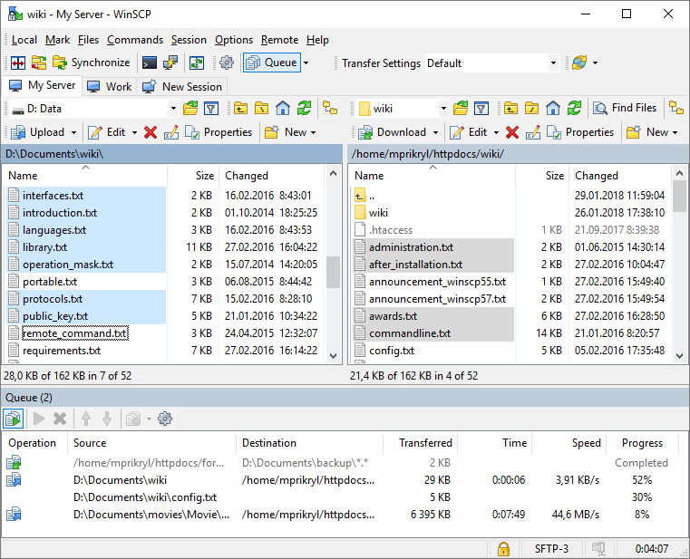
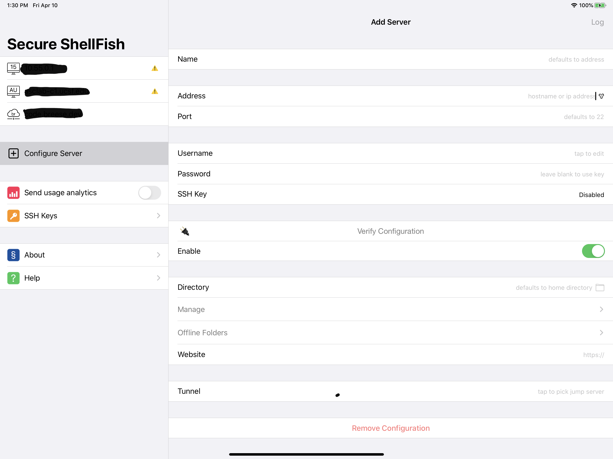

Transferring data
Getting data onto a remote system and getting results back to your local computer can sometimes be a bit of a challenge. Unsurprisingly, there are a few options available to you, including some good GUI options.
Command-line programs
For the below programs, scp and sftp should be already installed. If you are using Windows, there are command-line versions of these programs available as well, such as those supplied with PuTTY (although, they may have slightly different names). rsync is also installed by default on Macs, but you may need to install it separately if you are using a Linux client. scp, sftp, and rsync all work over the SSH protocol, so for any server that you can connect to via SSH, you can use these programs to transfer data.
scp
scp can be used to copy files from one location to another. The locations can be local or remote. You can even use scp to transfer files from one server to a different server.
scp localfile username@server:dest_dir/filename
scp username@server:dest_dir/filename local_dir/local_file
sftp
sftp is like scp, but interactive. You can connect to the remote SFTP server, list files, get files, put files, etc… This is a command-line program, but it is one way to interactively browse around the files on a remote server.
sftp username@server
Once connected, you can ls and cd to navigate around. When you want to download a file, run get remote_filename. When you want to upload a file, run put local_filename When you are done and want to disconnect, run exit.
rsync
A final option is rsync. Rsync works by finding the files changed between two locations (local and remote), and sending only the changed data between the two. This is particularly helpful when you are transfering a lot of data or trying to keep two computers in sync with each other. This can also be used to copy files on the same server or between servers.
rsync localfile username@server:dest_dir/filename
rsync username@server:dest_dir/filename local_dir/local_file
rsync localfile1 localfile2
rsync username@server1:dir/filename username@server2:dest_dir/filename
If this looks the same as the scp instructions, that’s because it is! However, you almost always want to run rsync with a few options.
rsync -avz --progress localfile username@server:dest_dir/filename
rsync -avz --progress username@server:dest_dir/filename local_dir/local_file
rsync -av --progress localfile1 localfile2
rsync -avz --progress username@server1:dir/filename username@server2:dest_dir/filename
Here, we added the -a, -v, -z and --progress options. -a stands for “archive”, which sync directories (recursively), permissions, dates, owner information, etc. Not all of these will translate to your local computer, but it is very useful when transferring files on the same server or between servers with the same user/group configurations. -v stands for “verbose”. This will print out a bit more information about the transfer on the terminal for you to see how the transfer is progressing. -z enables zlib compression while you are transferring. This doesn’t help if you are copying files on the same server, but can save a lot of bandwidth when copying to/from a remote server. Finally, the --progress option tells rsync to print out a progress meter for the current transfer. It isn’t necessary, but it is a nice way to monitor the status of the current file’s transmission.
Downloading with HTTP/FTP
Another option you have to get data onto a server is to download it from a public web (HTTP) or FTP server. There are two primary tools that you can use at the command line to manage this: curl and wget. They are roughly equivalent for this purpose and pretty easy to use. The main benefit of using tools like this is that you have a great deal of visibility into the data transfer if/when things go wrong. For a simple download though, they are pretty easy to use. Below is an example of how to download a file using curl:
curl -LO https://example.com/test.dat
In this example, the file you want to download is located at this URL: https://example.com/test.dat. The -L in the argument list tells curl to follow any redirection commands the server sends. Sometimes a server will redirect you to a different URL to download data. One common example is a redirection from a non-encrypted connection (HTTP) to an encrypted one (HTTPS). This is very common and happens transparently when you use a GUI web browser like Google Chrome or Firefox. Unfortunately, we have to explicitly tell curl to do the same. The -O argument tells curl to save the file as test.dat locally. By default, curl will send the data to stdout.
GUI
Cyberduck (macOS, Windows)
If you prefer a GUI program, one option is the Cyberduck program. It is available for Windows and Mac, and can make it easy to upload and download data from a remote server. It is also available for free, which is another bonus (but there is a donation prompt that appears until you register the program for $10).

For more information see here: https://cyberduck.io/
WinSCP (Windows)
WinSCP is a popular SFTP client for Windows. It has a pretty standard explorer interface where you can browse both your local computer and the remote server. This lets you copy files back and forth between them very easily. It is free to use.

MobaXterm (Windows)
If you’re using Windows, the MobaXterm program can be used to provide both SSH access to remote servers as well as SFTP access to transfer files back and forth.

Secure ShellFish (iOS)
There is also an option for data transfer when using an iPad or iPhone! You can use the program Secure ShellFish to link a remote server (using SSH/SFTP) to the iOS Files.app.

Cloud file sync services
It is possible to use cloud sync services like Dropbox or Box.net with a Linux server, but it can be very complicated to setup. For some enterprise customers these services will sometimes enable an FTP gateway, which lets users upload and download files using an FTP client. However this is not a common setup and not available to everyone.
There are also some command-line tools available that will upload and download files from cloud services. One example is from the Cyberduck group called duck.sh. For more information on this, see the Cyberduck wiki.